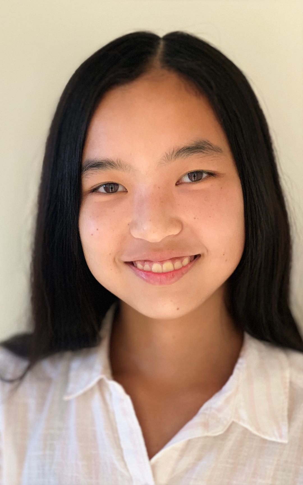

Alex Yan
Co-founder and Co-president
Portola High School, Grade 10
I wanted to take part in this club because I wanted the opportunity to make a positive change in other peoples' lives. Teaching math to younger students has taught me many skills, including dealing with people who have different personalities, skills, and backgrounds.
I hope to keep kids engaged and interested in math not only in school, but also outside of school and their future lives.

Grace Shao
Member
Portola High School, Grade 9
I chose to volunteer at Math at the Library because it is a great organization that strives to make a difference. Volunteering at Math at the Library has helped me expand my skills in working and communicating with other people. I hope that I can contribute to my community and help others succeed in learning math. Math is an incredibly important skill in everyday life and I'm thrilled to be a part of this organization. I am looking forward to 2019!
Kevin Du
Co-founder and Co-president
Portola High School, Grade 10
Liking math is unusual to some people who don't understand the beauty of math. I like to combat this mentality by helping kids learn more about math and enjoy math like I do.
One of my favorite things to do is creating problems and puzzles for my peers to solve. I would like to continue to spread my influence on the community by reaching out to elementary school students to help them with a subject I am passionate about.
My two years of teaching experience has taught me patience when talking with others and assessed me on how well I actually understand the most basic math principles. As Einstein said, If you can't explain it simply, you don't understand it well enough
.
Visit my personal site at thedukevin.github.io to find some puzzle games.

Michael Zhou
Member
Northwood High School, Grade 10

Arvin Ding
Co-founder and Vice President
Portola High School, Grade 10
Hi I'm Arvin
I enjoy making friends, playing games, and talking. I like to have fun regardless of where I am or how
Arvin enjoys playing games, listening to music or learning.
Andrew Zhang
Member
Northwood High School, Grade 10

AZ Li
Member
Irvine High School, Grade 9